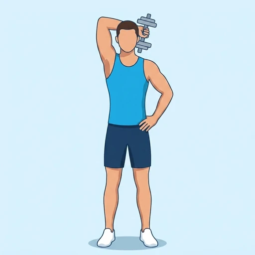

Single-Arm Dumbbell Overhead Tricep Extension
A one-arm overhead tricep extension giving a long, unilateral stretch of the long head and training anti-side-bend core stability.
Upper arms · Dumbbell · Beginner


Muscles worked by the Single-Arm Dumbbell Overhead Tricep Extension
Primary
Secondary
Also called: tricep, triceps, triceps brachii, horseshoe, tris.
Equipment
Also called: db, dumbell, hex dumbbell, rubber dumbbell, hand weight.
How to do the Single-Arm Dumbbell Overhead Tricep Extension
- Stand or sit holding a dumbbell in one hand overhead, arm fully extended.
- The palm faces forward; the other hand can hold your waist or an upright for stability.
- Bend the elbow to lower the dumbbell behind the head in a controlled arc.
- Keep the upper arm vertical and close to the head throughout.
- Extend the elbow to return the dumbbell overhead.
- Complete all reps on one side, then switch.
Form tips
- Only the forearm moves — the upper arm stays glued in place.
- Don't let the torso lean to the side; this is also a core exercise.
At a glance
| Body part | Upper arms |
|---|---|
| Category | Strength |
| Force type | Push |
| Mechanic | Isolation |
| Difficulty | Beginner |
| Equipment | Dumbbell |
| Goals | Hypertrophy |
| Tags | Arm day |
| MET | 5.0 (metabolic equivalent, for calorie estimates) |
| Unilateral | Yes |
| Bodyweight | No |
| Dataset id | single-arm-dumbbell-overhead-tricep-extension |
Single-Arm Dumbbell Overhead Tricep Extension in German & Spanish
| German | Einarmige Kurzhantel Overhead Trizeps Extension |
|---|---|
| Spanish | Extensión de Tríceps sobre la Cabeza con Mancuerna a Un Brazo |
Descriptions, instructions and tips ship in all three languages in the JSON.
Related exercises
Exercise data (JSON)
The record below is exactly what exercises.json ships for this exercise — names, descriptions, instructions and tips in English, German and Spanish.
{
"id": "single-arm-dumbbell-overhead-tricep-extension",
"name_en": "Single-Arm Dumbbell Overhead Tricep Extension",
"name_de": "Einarmige Kurzhantel Overhead Trizeps Extension",
"name_es": "Extensión de Tríceps sobre la Cabeza con Mancuerna a Un Brazo",
"description_en": "A one-arm overhead tricep extension giving a long, unilateral stretch of the long head and training anti-side-bend core stability.",
"description_de": "Eine einarmige Overhead-Trizepsübung mit langem, einseitigem Stretch des langen Kopfes und Training der seitlichen Rumpfstabilität.",
"description_es": "Una extensión de tríceps sobre la cabeza a un brazo que proporciona un estiramiento largo y unilateral de la cabeza larga y entrena la estabilidad del core contra la flexión lateral.",
"category": "strength",
"force_type": "push",
"mechanic": "isolation",
"difficulty": "beginner",
"equipment": "dumbbell",
"body_part": "upper_arms",
"primary_muscles": [
"triceps_brachii"
],
"secondary_muscles": [
"obliques"
],
"goals": [
"hypertrophy"
],
"tags": [
"arm_day"
],
"variation_group": "overhead-tricep-extension",
"is_unilateral": true,
"is_bodyweight": false,
"instructions_en": [
"Stand or sit holding a dumbbell in one hand overhead, arm fully extended.",
"The palm faces forward; the other hand can hold your waist or an upright for stability.",
"Bend the elbow to lower the dumbbell behind the head in a controlled arc.",
"Keep the upper arm vertical and close to the head throughout.",
"Extend the elbow to return the dumbbell overhead.",
"Complete all reps on one side, then switch."
],
"instructions_de": [
"Stehe oder sitze und halte eine Kurzhantel in einer Hand über dem Kopf, Arm vollständig gestreckt.",
"Die Handfläche zeigt nach vorne; die andere Hand kann die Hüfte oder eine Stütze halten.",
"Beuge den Ellbogen und senke die Kurzhantel kontrolliert hinter den Kopf.",
"Halte den Oberarm senkrecht und nah am Kopf.",
"Strecke den Ellbogen, um die Kurzhantel zurück nach oben zu führen.",
"Führe alle Wiederholungen auf einer Seite durch, dann wechsle."
],
"instructions_es": [
"De pie o sentado, sostén una mancuerna en una mano sobre la cabeza con el brazo completamente extendido.",
"La palma mira hacia adelante; la otra mano puede apoyarse en la cadera o en un soporte para mayor estabilidad.",
"Flexiona el codo para bajar la mancuerna detrás de la cabeza en un arco controlado.",
"Mantén el brazo superior vertical y cerca de la cabeza durante todo el movimiento.",
"Extiende el codo para regresar la mancuerna sobre la cabeza.",
"Completa todas las repeticiones de un lado y luego cambia."
],
"tips_en": [
"Only the forearm moves — the upper arm stays glued in place.",
"Don't let the torso lean to the side; this is also a core exercise."
],
"tips_de": [
"Nur der Unterarm bewegt sich – der Oberarm bleibt fixiert.",
"Lass den Oberkörper nicht zur Seite kippen; das ist auch eine Rumpfübung."
],
"tips_es": [
"Solo el antebrazo se mueve — el brazo superior permanece fijo en su lugar.",
"No dejes que el torso se incline hacia un lado; este también es un ejercicio de core."
],
"met": 5.0,
"images": {
"flat": {
"start": "images/flat/single-arm-dumbbell-overhead-tricep-extension-start.webp",
"peak": "images/flat/single-arm-dumbbell-overhead-tricep-extension-peak.webp"
}
}
}Fetch just this exercise
const { exercises } = await fetch(
"https://exercise-dataset.com/exercises.json"
).then(r => r.json());
const ex = exercises.find(e => e.id === "single-arm-dumbbell-overhead-tricep-extension");Free for personal and commercial in-app use with attribution (“Exercise data by RepDB”) — see the license and ready-made attribution snippets. Redistributing the data as a dataset or API is not permitted.